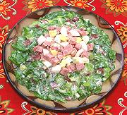

|
Catalan SaladSpain - Catalonia - Amaneda | ||||
| Serves: Effort: Sched: DoAhead: |
5 salad ** 40 min Most |
An unusual, delicious and very much non-vegetarian salad from Catalonia. Don't skip the Garnishes on this one. This salad is durable on a buffet, and can be made ahead up to dressing the greens. | |||
|
|
------ 12 5 6 3-1/2 8 ------ 1 1/2 1 1/4 ------ 2 5 |
--- oz oz oz --- cl c T t --- oz |
-- Salad Escarole head Celery Scallions Serrano Ham (1) Anchovy fillet (2) -- Dressing Garlic Mayonnaise (3) Wine Vinegar Salt (4) -- Garnish Eggs, hard boiled Butifarra (5) |
Do-Ahead - (1 hr - 10 min work)
|